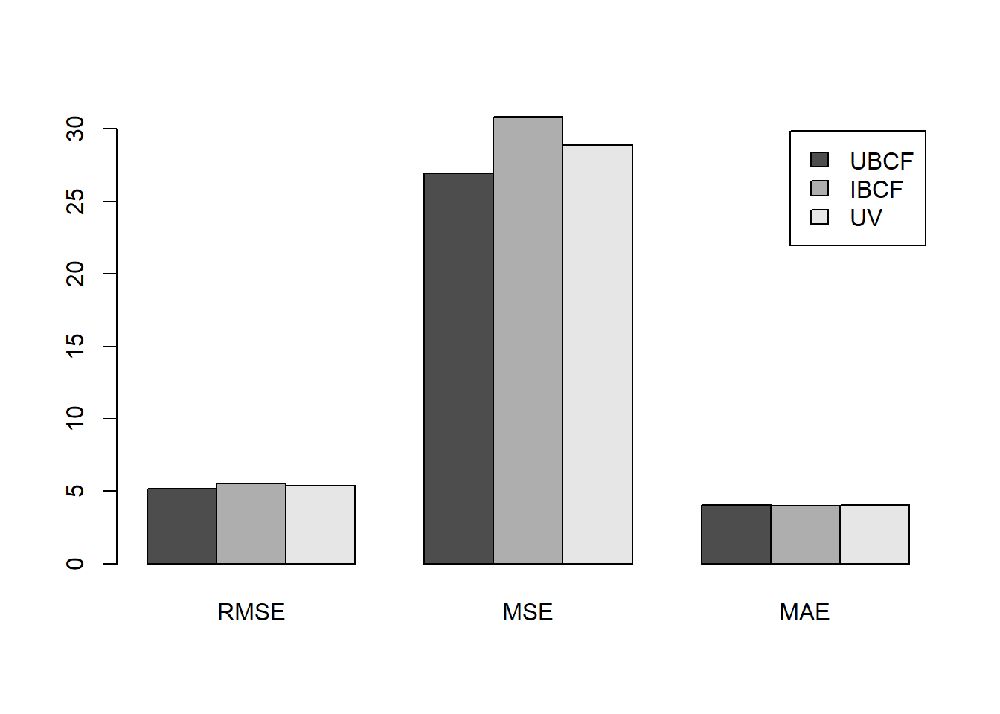
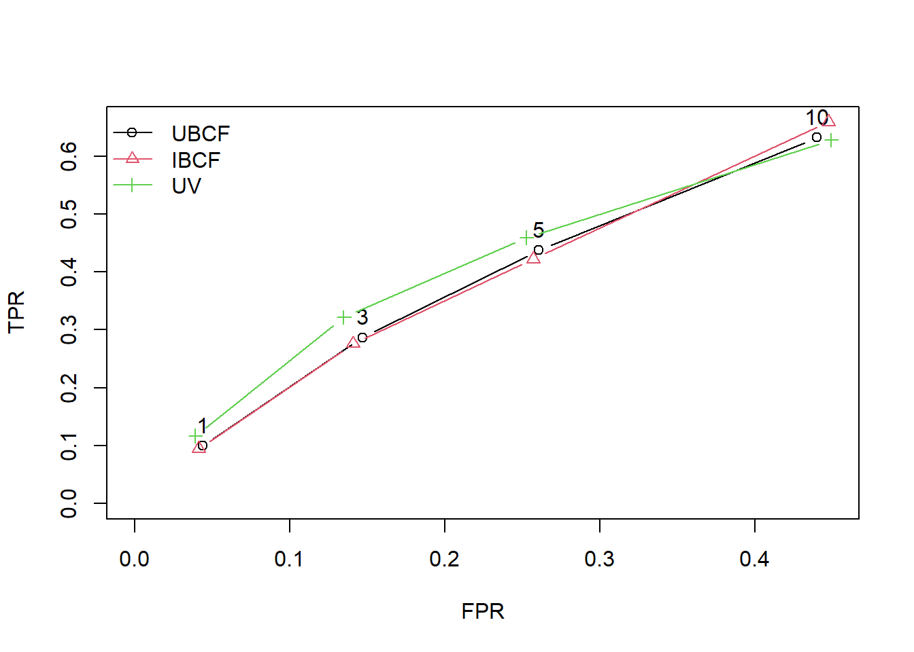

2 Example 1: Jester5k
This example is designed to illustrate the process of building recommender systems. The dataset we will be investigating is the Jester5k data, which contains a sample of 5000 users from the anonymous ratings data from the Jester Online Joke Recommender System collected between April 1999 and May 2003. The data set contains ratings for 100 jokes on a scale from −10 to +10.
The dataset is available in the recommenderlab package:
Reference: Section 5.4 of the
recommenderlabpackage vignette
2.1 Exploratory data analysis
First, let's investigate the data a bit. Revise the R code in the lecture note and answer the following questions:
How many items (i.e. jokes) are there in this dataset?
On average, how many jokes do the users rate? You can report the median value in this case to get an integer value.
On average, how many ratings have been made to each joke?
You can get information about the dataset by using the cat() function. rowCounts and colCounts can be useful to get information about items and users.
## A man visits the doctor. The doctor says "I have bad news for you.You have cancer and Alzheimer's disease". The man replies "Well,thank God I don't have cancer!"## 5000 x 100 rating matrix of class 'realRatingMatrix' with 363209 ratings.## 5 x 5 sparse Matrix of class "dgCMatrix"
## j1 j2 j3 j4 j5
## u7452 -1.60 -3.54 4.17 1.84 -0.44
## u8016 2.04 -9.42 5.53 -3.83 -8.50
## u7162 5.53 -9.08 0.49 -4.71 -1.07
## u8086 . . . . -0.39
## u23653 4.47 6.80 8.20 6.89 6.55
## Min. 1st Qu. Median Mean 3rd Qu. Max.
## 36.00 53.00 72.00 72.64 100.00 100.00## Min. 1st Qu. Median Mean 3rd Qu. Max.
## 1732 2082 3971 3632 4957 5000hist(getRatings(Jester5k), breaks=100) #getRating(): extract a vector with all non-missing ratings from a rating matrix
##Build recommender systems and make predictions
First, let's build a user-based collaborative filtering (UBCF) system to predict the ratings and the top-\(N\) recommendations. Here, we use Pearson correlation to measure the similarity between users and select the nearest 5 users to form a neighbourhood.
Jester_UBCF <- Recommender(Jester5k, method="UBCF",
param=list(method="pearson",nn=5))
# Predict ratings only for unrated items
Jester_UBCF_rating <- predict(Jester_UBCF, Jester5k, type="ratings")
Jester_UBCF_rating@data[5:10,1:10] ## 6 x 10 sparse Matrix of class "dgCMatrix"
##
## u23653 . . . . . . . . .
## u9196 -0.07931507 -11.389315 -11.09932 -8.529315 . 1.979581 . . -11.969315
## u623 . . . . . . . . .
## u15241 -6.58902953 -9.318072 -10.24682 -7.785684 . . . . -5.911201
## u10885 . . . . . . . . .
## u934 . . . . . . . . .
##
## u23653 .
## u9196 2.338837
## u623 .
## u15241 .
## u10885 .
## u934 .# Predict ratings for all items
Jester_UBCF_ratMat <- predict(Jester_UBCF, Jester5k, type="ratingMatrix")
Jester_UBCF_ratMat@data[5:10,1:10] ## 6 x 10 sparse Matrix of class "dgCMatrix"
##
## u23653 4.47000000 6.500162 8.20000 6.890000 4.4607620 6.249957
## u9196 -0.07931507 -11.389315 -11.09932 -8.529315 -0.9528821 1.979581
## u623 2.82000000 8.443053 -3.25000 -4.900000 0.5686730 8.790000
## u15241 -6.58902953 -9.318072 -10.24682 -7.785684 -10.9454347 -8.377496
## u10885 7.23000000 2.140000 3.11000 0.830000 4.7309487 5.455884
## u934 2.28000000 5.050000 3.25000 -4.030000 -2.5496590 -1.410000
##
## u23653 5.6891707 3.2277391 -7.860000 1.682018
## u9196 0.9858209 2.6325211 -11.969315 2.338837
## u623 -1.3240298 -2.2544086 -2.280000 0.190000
## u15241 -6.2988748 -6.6407474 -5.911201 -7.945736
## u10885 -4.5946605 2.0570513 3.300000 3.365357
## u934 -5.2687146 0.0676189 -2.620000 3.395148# Recommend top-3 items.
Jester_UBCF_topN <- predict(Jester_UBCF, Jester5k, type="topNList", n=3)
getList(Jester_UBCF_topN)[1:5]## $`0`
## character(0)
##
## $`1`
## character(0)
##
## $`2`
## [1] "j88" "j86" "j72"
##
## $`3`
## [1] "j93" "j76" "j86"
##
## $`4`
## character(0)Let's now move on to an item-based collaborative filtering (IBCF) system.
You can revise the previous codes on the UBCF system to predict ratings and top-\(N\) items with the new IBCF system.
Finally, we can perform UV-decomposition on the rating matrix. Strictly speaking, the package implements the idea of matrix factorization using singular value decomposition (SVD), which is numerically more robust and efficient. The key parameter for matrix decomposition (either UV or SVD) is the latent dimension, which is set as 3 in the following code.
Jester_UV <- Recommender(Jester5k,method="SVDF", param=list(k=3)) #k: latent dimension
dim(Jester_UV@model$svd$U)## [1] 5000 3## [1] 100 32.2 Evaluate recommender systems using built-in functions
2.2.1 Evaluate predicted ratings
We evaluate the three recommendation systems using 10-fold cross-validation. For the test set, 5 items will be given to the recommender algorithm to make the prediction and the rest of items will be held out for computing the error. Below is an example on evaluating UBCF.
set.seed(1)
Jester_eval <- evaluationScheme(Jester5k, method="cross-validation", train=10, given=5)
Jester_eval## Evaluation scheme with 5 items given
## Method: 'cross-validation' with 10 run(s).
## Good ratings: NA
## Data set: 5000 x 100 rating matrix of class 'realRatingMatrix' with 363209 ratings.UV_results <- evaluate(Jester_eval, method="UBCF", type="ratings",
param=list(method="pearson", nn=20))## UBCF run fold/sample [model time/prediction time]
## 1 [0sec/1.42sec]
## 2 [0.01sec/1.39sec]
## 3 [0sec/1.3sec]
## 4 [0sec/1.5sec]
## 5 [0.02sec/1.47sec]
## 6 [0.02sec/1.55sec]
## 7 [0.01sec/1.25sec]
## 8 [0sec/1.53sec]
## 9 [0.02sec/1.56sec]
## 10 [0.03sec/1.63sec]## [[1]]
## RMSE MSE MAE
## [1,] 5.193657 26.97408 4.056888
##
## [[2]]
## RMSE MSE MAE
## [1,] 5.25338 27.598 4.095921
##
## [[3]]
## RMSE MSE MAE
## [1,] 5.240763 27.4656 4.075165
##
## [[4]]
## RMSE MSE MAE
## [1,] 5.047052 25.47273 3.923499
##
## [[5]]
## RMSE MSE MAE
## [1,] 5.153095 26.55439 4.02708
##
## [[6]]
## RMSE MSE MAE
## [1,] 5.241926 27.47779 4.097877
##
## [[7]]
## RMSE MSE MAE
## [1,] 5.219711 27.24538 4.060484
##
## [[8]]
## RMSE MSE MAE
## [1,] 5.108431 26.09607 3.972254
##
## [[9]]
## RMSE MSE MAE
## [1,] 5.25738 27.64005 4.088578
##
## [[10]]
## RMSE MSE MAE
## [1,] 5.192933 26.96655 4.089866## RMSE MSE MAE
## [1,] 5.190833 26.94906 4.048761When evaluating multiple recommender algorithms, we can create a list of algorithms and evaluate them all together. The following R code will take a while to complete.
algs <- list(
"UBCF" = list(name="UBCF", param=list(method="pearson",nn=20)),
"IBCF" = list(name="IBCF", param=list(k=5)),
"UV" = list(name="SVDF", param=list(k=5))
)
Jester_results <- evaluate(Jester_eval, algs, type="ratings")## UBCF run fold/sample [model time/prediction time]
## 1 [0.01sec/1.35sec]
## 2 [0sec/1.13sec]
## 3 [0.02sec/1.52sec]
## 4 [0sec/1.83sec]
## 5 [0sec/1.68sec]
## 6 [0.02sec/1.39sec]
## 7 [0.02sec/1.58sec]
## 8 [0sec/1.23sec]
## 9 [0sec/1.19sec]
## 10 [0sec/1.34sec]
## IBCF run fold/sample [model time/prediction time]
## 1 [0.14sec/0sec]
## 2 [0.2sec/0sec]
## 3 [0.16sec/0sec]
## 4 [0.2sec/0.01sec]
## 5 [0.14sec/0sec]
## 6 [0.21sec/0sec]
## 7 [0.13sec/0.02sec]
## 8 [0.15sec/0sec]
## 9 [0.07sec/0sec]
## 10 [0.11sec/0sec]
## SVDF run fold/sample [model time/prediction time]
## 1 [27.23sec/1.35sec]
## 2 [24.07sec/1.07sec]
## 3 [24.84sec/0.74sec]
## 4 [22.26sec/0.91sec]
## 5 [24.94sec/0.67sec]
## 6 [23.67sec/1.02sec]
## 7 [25.94sec/0.8sec]
## 8 [25.18sec/0.77sec]
## 9 [19.55sec/0.54sec]
## 10 [21.95sec/0.78sec]# getResults(Jester_results$UBCF)
# getResults(Jester_results$IBCF)
# getResults(Jester_results$UV)
avg(Jester_results)## $UBCF
## RMSE MSE MAE
## [1,] 5.190833 26.94906 4.048761
##
## $IBCF
## RMSE MSE MAE
## [1,] 5.552533 30.84357 3.997202
##
## $UV
## RMSE MSE MAE
## [1,] 5.372767 28.87444 4.060785
2.2.2 Evaluate top-N recommendations
Given our data is a real rating matrix, we need to convert it into a binary matrix in order to evaluate if the top-\(N\) recommended items will be liked by the user. This conversion is achieved by using the argument goodRating, which is a threshold on the actual ratings; values at or above the threshold is considered to be liked by the user and vice versa. In other words, an item in the topNList is considered a true positive if it has a rating of goodRating or better in the observed data.
Jester_eval2 <- evaluationScheme(Jester5k, method="cross", k=5, given=-5,
goodRating=0)
Jester_eval2## Evaluation scheme using all-but-5 items
## Method: 'cross-validation' with 5 run(s).
## Good ratings: >=0.000000
## Data set: 5000 x 100 rating matrix of class 'realRatingMatrix' with 363209 ratings.## UBCF run fold/sample [model time/prediction time]
## 1 [0sec/2.9sec]
## 2 [0.02sec/2.51sec]
## 3 [0sec/3.32sec]
## 4 [0sec/2.96sec]
## 5 [0sec/3.51sec]
## IBCF run fold/sample [model time/prediction time]
## 1 [0.11sec/0.05sec]
## 2 [0.12sec/0.11sec]
## 3 [0.14sec/0.08sec]
## 4 [0.17sec/0.07sec]
## 5 [0.17sec/0.06sec]
## SVDF run fold/sample [model time/prediction time]
## 1 [20.29sec/0.93sec]
## 2 [22.51sec/0.99sec]
## 3 [24.35sec/1.08sec]
## 4 [27.46sec/0.99sec]
## 5 [25.86sec/0.99sec]## $UBCF
## TP FP FN TN N precision recall TPR
## [1,] 0.2914 0.7078 2.6972 28.6618 32.3582 0.2916296 0.0993973 0.0993973
## [2,] 0.8690 2.1170 2.1196 27.2526 32.3582 0.2920279 0.2868698 0.2868698
## [3,] 1.3626 3.5368 1.6260 25.8328 32.3582 0.2841101 0.4373338 0.4373338
## [4,] 2.0100 6.9376 0.9786 22.4320 32.3582 0.2644796 0.6318470 0.6318470
## FPR n
## [1,] 0.04372079 1
## [2,] 0.14676343 3
## [3,] 0.26047798 5
## [4,] 0.43986712 10
##
## $IBCF
## TP FP FN TN N precision recall TPR
## [1,] 0.2818 0.7178 2.7068 28.6518 32.3582 0.2819127 0.09452575 0.09452575
## [2,] 0.8548 2.1352 2.1338 27.2344 32.3582 0.2865485 0.27604460 0.27604460
## [3,] 1.3402 3.5744 1.6484 25.7952 32.3582 0.2775938 0.42242109 0.42242109
## [4,] 2.0882 6.9336 0.9004 22.4360 32.3582 0.2671422 0.65879285 0.65879285
## FPR n
## [1,] 0.04123933 1
## [2,] 0.14086329 3
## [3,] 0.25706582 5
## [4,] 0.44742267 10
##
## $UV
## TP FP FN TN N precision recall TPR
## [1,] 0.3448 0.6548 2.6438 28.7148 32.3582 0.3449417 0.1167492 0.1167492
## [2,] 0.9736 2.0164 2.0150 27.3532 32.3582 0.3261658 0.3218409 0.3218409
## [3,] 1.4424 3.4722 1.5462 25.8974 32.3582 0.2980438 0.4591529 0.4591529
## [4,] 2.0330 6.9890 0.9556 22.3806 32.3582 0.2616186 0.6278107 0.6278107
## FPR n
## [1,] 0.03914858 1
## [2,] 0.13483907 3
## [3,] 0.25273000 5
## [4,] 0.44912709 10
The above example covers collaborative filtering recommender systems. If you are interested in content-based recommender systems, the following example may be studied: https://michael.hahsler.net/other_courses/ICMA_Recommendation_Tools/code/content-based.html#calculate-content-based-item-similarity